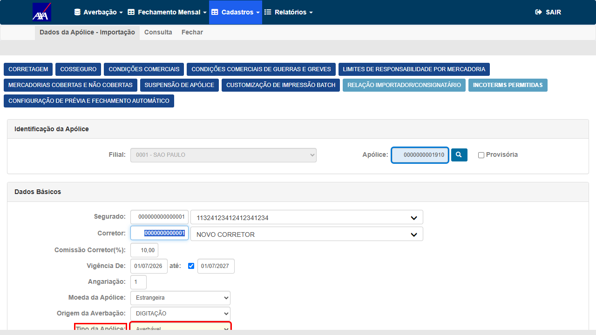
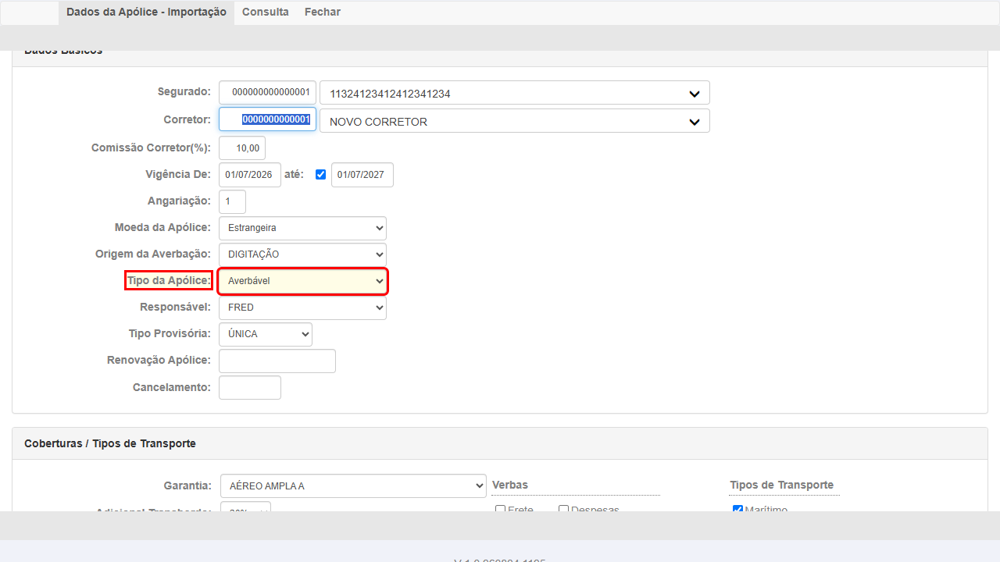
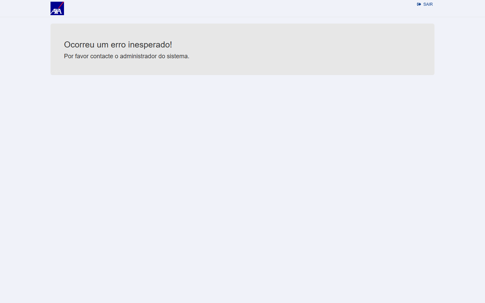

Rodada vigente — reteste do fix do #8008 (05/08/2026, AXA HML, builds V 1.0.260804.2006/.2007).
Em CT de relatório a evidência é o próprio arquivo baixado e validado com openpyxl contra o cadastro:
| CT | Arquivo (clique para baixar) | Medição |
|---|---|---|
| CT-RAP-001 Nacional |
Nacional 04–06/2026 .xlsx | 3.701 linhas · MENSAL DET 9 (segue nacional) · 1.411 conferidas, 0 divergentes · 99 s |
| CT-RAP-002 Internacional |
Internacional 07/2026 .xlsx | 495 linhas · 464 conferidas · AVERBÁVEL 172 · 160 → 0 |
| CT-RAP-003 Gestão |
Gestão/GERAL 07/2026 .xlsx · Gestão/INTERNACIONAL .xlsx | 1.864 linhas · internacionais 172 → 0 · nacionais 1.364 → 0 |
| CT-RAP-005 formato .txt |
Gestão/GERAL 07/2026 .txt | 1.864 linhas · 16 colunas · distribuição idêntica ao .xlsx · 0 divergentes · 111 s |
| CT-RAP-004 SLA (referência) |
print do erro (png) | BLOQUEADO — "Ocorreu um erro inesperado!" em 3 reproduções (nacional e internacional); sem arquivo para comparar |
{kind=link}
Histórico — rodadas anteriores, mantidas para auditoria dos escapes declarados nos CT-RAP-002 e 004:
| CT | Evidência | Achado-chave |
|---|---|---|
| CT-RAP-001 | Nacional .xlsx · critérios (png) | 3.692 linhas, 0 em branco; DIÁRIA/AJUSTÁVEL/MENSAL DET/NÃO POSSUI |
| CT-RAP-002 | Internacional Demais .xlsx · Ajustáveis .xlsx | 1.344 + 1.448 linhas, 0 em branco — mas tudo "DIÁRIA": era o #7975, e este CT passou por engano em 24/07 |
| CT-RAP-002 reteste #7975 | Internacional 07/2026 .xlsx (03/08) | 495 linhas · 4 valores distintos · 25 apólices cruzadas com e_avb, 0 divergências |
| CT-RAP-003 | Gestão/GERAL .xlsx | 4.169 linhas, 0 em branco; cobre Nac+Int |
| CT-RAP-004 | cadastro RCTR-C (png) | campo "Tipo da Apólice" = origem da coluna — evidência do módulo Nacional, generalizada por engano para o Internacional |
| CT-RAP-004 reexec. 04/08 | Internacional 07/2026 .xlsx · cadastro apólice 1910 (png) · identificação (png) | REPROVADO — cadastro diz Averbável, relatório imprime MENSAL DET (172 de 495 linhas; 161 apólices) |
| CT-RAP-005 | Gestão .txt | coluna presente no formato .txt, 4.168 linhas, 0 em branco |
{kind=link}
{kind=link}
In scope: inclusão e correção da coluna "Tipo de Apólice" no relatório Análise de Produção — presença e preenchimento por registro nos módulos Nacional, Internacional e Gestão; consistência de nomenclatura/origem com os demais relatórios; presença em todos os formatos de exportação; tratamento de apólice sem tipo definido; regressão (filtros/totais/comportamento) e performance.
Out of scope: demais colunas do relatório; outros relatórios que já possuem a coluna (servem apenas de referência de nomenclatura); alterações de layout não relacionadas.
Pré-requisitos:
- Feature implantada em HML (task #7844 concluída + card em "Pronto para homologação") — pré-condição bloqueadora da execução, cumprida: 24/07 (feature) e 05/08 09:42 (fix do #8008 em AXA HML e HDI HML).
- Ambiente: CITWEB HDI-Yelum HML —
https://hdi-yelum-hml-faturamento.nsseg.com.br; usuário/senha em.env(HML_HDI_YELUM_CITWEB_USER/HML_HDI_YELUM_CITWEB_PASS) — nunca versionar credencial. - Massa: apólices com tipos distintos (ao menos uma Diária e uma Ajustável) + ao menos uma sem tipo definido — a confirmar na execução via Relação de Apólices HDI-Yelum (ou criar via UI, conforme necessário).
- Relatório de referência que já possui a coluna "Tipo de Apólice" (para conferir nomenclatura/origem) — identificar na execução.
- Navegação: [Módulo] → Relatórios → Análise de Produção (a confirmar o rótulo exato do menu na execução; controller
AnaliseProducao, exportação viaDownloadArquivo).
Grupo 1 — Presença e valores da coluna por módulo
3▼Objetivo
CA1: no módulo Nacional, ao gerar/exibir o relatório Análise de Produção, a coluna "Tipo de Apólice" deve estar presente e preenchida corretamente para cada registro.
Passos
- Login CITWEB HML
- Acessar Nacional → Relatórios → Análise de Produção
- Filtrar por filial/ramo/período com apólices de tipos conhecidos e gerar o relatório (formato .xlsx)
- Localizar a coluna "Tipo de Apólice" e conferir, registro a registro, o valor exibido
- Cruzar com o tipo real da apólice (cadastro / SQL) para 2–3 apólices de amostra
Resultado Esperado
Analitico-Producao-Basico-Nac-AXA-04a06-2026.xlsx — 3.698 linhas × 22 colunas; a coluna 21 = "Tipo de Apólice" está presente e preenchida em TODAS as 3.692 linhas de dados (0 vazias). Valores: DIÁRIA (3.668), AJUSTÁVEL (11), MENSAL DET (8), NÃO POSSUI TIPO DE APOLICE (5) — coerentes com o cadastro. Os 5 sem tipo (apólices legadas, anteriores à obrigatoriedade) exibem o rótulo "NÃO POSSUI TIPO DE APOLICE", nunca em branco (corrobora CT-RAP-006). Corrobora também CT-RAP-005 (coluna presente no export .xlsx).
- Analitico-Producao-Basico-Nac-AXA-04a06-2026.xlsx — export .xlsx (3.698 linhas × 22 colunas; coluna 21 "Tipo de Apólice" preenchida em 3.692/3.692)
- Screenshot dos critérios do relatório:

ℹ️ Nota de ambiente: o card é HDI-Yelum, mas o fix é core (RelatorioAnaliseProducao/main-fix) e o dev (José) deployou em AXA e HDI HML; HDI-Yelum HML tem 12 apólices Nacional e 0 movimentos → relatório vazio lá. Validação feita na AXA (build 260724, dados fartos). Se Produtos exigir validação especificamente em HDI-Yelum, requer criar massa de movimento/fatura Nacional em HDI.
Reteste (05/08/2026 — regressão do fix do #8008) → APROVADO
✅ APROVADO — e este CT é a regressão que o fix precisava ter. No cadastro
nacional 'N' é "Mensal Detalhado", então aqui MENSAL DET é o rótulo
certo: se o patch do ramo internacional tivesse vazado, estas linhas viriam
AVERBÁVEL. Repeti a mesma janela da linha de base de 24/07 (módulo Nacional,
ref 04–06/2026, critério Ajustáveis, .xlsx) no build V 1.0.260804.2006:
| Coluna "Tipo de Apólice" | Linha de base 24/07 | Reteste 05/08 | Leitura |
|---|---|---|---|
MENSAL DET | 8 | 9 | continua MENSAL DET — nenhuma virou AVERBÁVEL |
DIÁRIA | 3.668 | 3.676 | massa nova no ambiente (+8) |
AJUSTÁVEL | 11 | 11 | idêntico |
NÃO POSSUI TIPO DE APOLICE | 5 | 5 | idêntico |
| Total de linhas de dados | 3.692 | 3.701 | +9 linhas criadas no ambiente entre 24/07 e 05/08 |
O que fecha a regressão: 1.411 linhas conferidas
contra tb_apo_nac_cit.e_avb e 0 divergentes — mais "DIÁRIA indevida (#7975) = 0".
Note que a comparação honesta é a do vocabulário, não a das 8 linhas individuais: o total subiu para 9
porque o ambiente ganhou massa nova, e nenhuma das linhas nacionais contradiz o cadastro.
Isto é exatamente o CT4 que a validação local do dev deixou inconclusivo (o filtro de Status da tela não permitia isolar) — resolvido pelo arquivo, sem depender da tela.
ct_rap_tipo_apolice_reteste.py --modulo NACIONAL --mes 04 --mes-ate 06 --criterio ajustaveis
· export em 99 s.Objetivo
CA2: mesmo comportamento do CT-RAP-001 aplicado ao módulo Internacional.
Passos
- Acessar Internacional → Relatórios → Análise de Produção
- Gerar o relatório com massa Internacional
- Conferir a coluna "Tipo de Apólice" registro a registro + cruzamento com o cadastro
Resultado Esperado
Execução (24/07/2026 — AXA HML, build V 1.0.260724.1113)
- Coluna "Tipo de Apólice" presente (posição 22, mesma do relatório Nacional).
- 1.344 registros, 0 (zero) em branco.
- Valor preenchido corretamente:
DIÁRIA(consistente com o tipo das apólices Internacionais AXA no período).
- …Internacional-AXA-01a06-2026-Demais.xlsx — filtro Demais (1.344 linhas, 0 em branco, DIÁRIA)
- …Internacional-AXA-01a06-2026-Ajustaveis.xlsx — filtro Ajustáveis (1.448 linhas, 0 em branco, DIÁRIA)
O módulo Internacional retornou um único valor DIÁRIA nas 1.344 linhas do filtro
"Demais" e também nas 1.448 do filtro "Ajustáveis". Um export de apólices ajustáveis
inteiramente marcado como diária era o defeito #7975
em cima da mesa — e passou.
Por que passou: aceitei como prova de que "a coluna não é constante" a variedade de valores do módulo Nacional (CT-RAP-001). Nacional e Internacional são caminhos de código distintos; a evidência de um não vale pelo outro. O CT pedia "cruzamento com o cadastro" no passo 3 e isso não foi feito para o Internacional — só a contagem de vazios foi verificada.
A comparação que o CA4 pede de verdade — relatório × relatório — só foi tentada em 05/08, e aí descobri que o relatório de referência não gera neste ambiente (ver o bloco BLOQUEADO no fim deste CT).
Lição aplicada: "coluna preenchida" ≠ "coluna correta". Verificação de conteúdo
exige cruzar linha a linha com a fonte (tb_apo_int_cit.e_avb), no mesmo módulo, e um valor único em
toda a extração é sinal de hardcode até prova em contrário — nunca de coincidência de massa.
Reteste do fix #7975 (03/08/2026 — AXA HML, build Internacional V 1.0.260803.1318)
DIÁRIA 302 · MENSAL DET 172 · AJUSTÁVEL 19 ·
NÃO POSSUI TIPO DE APOLICE 2 — o valor único de 24/07 desapareceu.
Cruzamento apólice × cadastro (tb_apo_int_cit.e_avb) — 25 apólices, 0 divergências:
e_avb no cadastro | Tipo no relatório | Nº das apólices conferidas (nº, não quantidade) |
|---|---|---|
'A' | AJUSTÁVEL | apólices nº 7, 5106220003349 e 1 |
'N' | MENSAL DET | apólices nº 1910, 10, 777, 1710, 6062026, 4706220003379 e outras 15 |
'D' | DIÁRIA | apólice nº 1980 |
Critério que discrimina fix de bug: nenhuma apólice com e_avb ≠ 'D'
apareceu como DIÁRIA (0 suspeitos). Em especial a apólice 7 (e_avb='A') veio
AJUSTÁVEL — se o hardcode persistisse, ela viria DIÁRIA. A apólice
4706220003371 do reprovado da Fabiola não existe na AXA HML (0 linhas) — ela validou em
staging, que tem dados próprios; por isso o reteste usa a massa equivalente acima.
- Analitico-Producao-Int-AXA-07-2026_20260803.xlsx — export do reteste (495 linhas, 4 valores distintos)
- Script:
testes-automatizados/sprint-11-citweb/pbi-7762/ct_rap_tipo_apolice_reteste.py— reexecuta o cruzamento em qualquer tenant (--tenant axa|hdi)
04/08/2026 — este reteste de 03/08 também caiu: REPROVADO
✗ Olhe a linha 'N' → MENSAL DET da tabela acima. Ela está lá como se fosse a
conferência dando certo — e é exatamente o defeito. Eu escrevi aquela tabela com o mapa
{"N":"MENSAL DET"} tirado do próprio relatório; então as 21 apólices daquela linha
não confirmaram nada: elas são as apólices rotuladas erradas. No cadastro internacional
'N' é "Averbável" — ver CT-RAP-004 para a evidência em tela e
CT-RAP-003 para a medição por ramo.
O que continua valendo deste reteste: o fix do
#7975 está bom — o valor único
DIÁRIA desapareceu e a apólice nº 7 (e_avb='A') vem AJUSTÁVEL. Reexecutando com o
oráculo corrigido: 0 linhas com "DIÁRIA indevida" (#7975) e 160
divergências de rótulo (#8008). São dois defeitos independentes — um corrigido, um aberto.
Por que reprovo este CT junto: por coerência de placar. O CT-RAP-003 faz esta mesma checagem no módulo Gestão e foi reprovado pelas linhas internacionais; deixar o CT-RAP-002 verde seria afirmar e negar a mesma coisa no mesmo documento. Os três reprovados (002/003/004) são um defeito — #8008.
Reteste (05/08/2026 — fix do #8008 em HML) → APROVADO
✅ APROVADO. Módulo Internacional (a tela deste CT, não o Gestão com
filtro), script ct_rap_tipo_apolice_reteste.py, ref 07/2026, build
V 1.0.260804.2007:
- 495 linhas · 464 conferidas contra o cadastro (
tb_apo_int_cit.e_avb); - DIÁRIA indevida (#7975): 0 — o defeito do valor único segue corrigido;
- Rótulo divergente do cadastro (#8008): 0 — antes eram 160.
- Distribuição:
DIÁRIA302 ·AVERBÁVEL172 ·AJUSTÁVEL19 ·NÃO POSSUI TIPO DE APOLICE2.
Analitico-Producao-Int-07-2026.xlsx — export do módulo
Internacional, validado com openpyxl contra o cadastro.Nota de método: rodei também o Gestão
com filtro tipoRamo=INTERNACIONAL (495 linhas, 490 conferidas, 0 divergentes) — mas isso conta como
segunda medição do CT-RAP-003, não como este CT: é outra tela. Aproveitar a rodada do Gestão
aqui repetiria justamente o erro que reabriu este card — aprovar com medição que não corresponde ao que o CT
afirma.
Objetivo
CA3: mesmo comportamento do CT-RAP-001 aplicado ao módulo Gestão.
Passos
- Acessar Gestão → Relatórios → Análise de Produção
- Gerar o relatório
- Conferir a coluna "Tipo de Apólice" registro a registro + cruzamento com o cadastro
Resultado Esperado
Execução (24/07/2026 — AXA HML, build V 1.0.260724.1113)
- Coluna "Tipo de Apólice" presente (posição 22, mesma dos módulos Nacional/Internacional).
- 4.169 registros, 0 (zero) em branco.
- Valores:
DIÁRIA(4.166) eMENSAL DET(3) — diferencia o tipo por registro. - Cobertura cross-módulo confirmada pela coluna Ramo: Nacional (59, 54, 21, 56, 58, 38, 55) e Internacional (32, 22) no mesmo relatório.
Reexecução (04/08/2026 — oráculo corrigido) → REPROVADO
✗ REPROVADO — o defeito do CT-RAP-004 alcança o módulo Gestão também. Este CT havia sido aprovado em 24/07 pelo mesmo critério falho: contei linhas e valores distintos, sem comparar nenhum deles com o cadastro. Como o relatório de Gestão mistura ramos nacionais e internacionais no mesmo arquivo, ele herda o defeito — e isso nunca tinha sido medido.
Script novo, escrito para este CT:
testes-automatizados/sprint-11-citweb/pbi-7762/ct_rap_003_gestao_geral.py. Ele classifica
cada linha pelo ramo e compara com o vocabulário do cadastro daquele módulo, em vez de
assumir um mapa único para o arquivo. Gestão → Tipo Ramo GERAL, ref 07/2026, build
V 1.0.260804.1125:
| Linhas do relatório | Conferidas contra o cadastro | Divergentes | Veredito |
|---|---|---|---|
| Nacionais (ramos 21/38/52/54/55/56/58/59) | 1.364 | 0 | correto — 'N' sai MENSAL DET e o
cadastro nacional diz "Mensal Detalhado" |
| Internacionais (ramos 22/25/28/30/32) | 490 | 172 (em 161 apólices) | defeito — cadastro diz Averbável, relatório diz
MENSAL DET |
Dois ganhos deste teste, além de reprovar:
- O CT-RAP-001 (Nacional) fica genuinamente confirmado. Aquelas 1.364 linhas com 0 divergências são a primeira verificação real do lado nacional contra o cadastro — antes eu só havia contado vazios. O lado nacional está certo, e agora isso é medido, não presumido.
- O escopo do defeito é maior do que "o módulo Internacional": qualquer relatório que traga linha de ramo internacional exibe o rótulo errado, inclusive o consolidado que Produtos usa.
tipoRamo.
Eu havia publicado que o branch tipoRamo == "INTERNACIONAL" é o que produz o rótulo errado.
Este teste refuta isso: aqui o tipoRamo enviado foi GERAL — e as
linhas internacionais ainda assim saíram MENSAL DET. Se a decisão fosse por
tipoRamo, com GERAL nenhum dos dois branches casaria e a coluna toda viria
"NÃO POSSUI TIPO DE APOLICE".
Ou seja: o build implantado decide pelo ramo da linha (c_rmo == 22 || c_rmo == 32),
exatamente como a cópia do RelatorioSLADomain.cs:1637 e exatamente como o
Diego descreveu na #8008. O trecho
que eu li está num checkout desatualizado (branch fix/ADO-7972-…, arquivo com 2.112
linhas); a versão dele (linhas 2146-2188) é a que vale. A leitura do Diego é a correta — a minha
servia para o mesmo diagnóstico, mas pelo mecanismo errado.
Reteste (05/08/2026 — fix do #8008 em HML) → APROVADO
✅ APROVADO. O Diego anunciou às 09:42 que o fix do #8008 estava em AXA HML e HDI
HML e moveu o card para Pronto para homologação. Reexecutei o mesmo script, no
mesmo módulo (Gestão → Tipo Ramo GERAL) e na mesma referência (07/2026) — build
V 1.0.260804.2006:
| Linhas do relatório | Conferidas | Divergentes em 04/08 | Divergentes agora | Veredito |
|---|---|---|---|---|
| Internacionais (22/25/28/30/32) | 490 | 172 (161 apólices) | 0 | fix confirmado — as 172 linhas agora saem
AVERBÁVEL, igual ao cadastro |
| Nacionais (21/38/52/54/55/56/58/59) | 1.364 | 0 | 0 | regressão preservada — 'N' segue
MENSAL DET; o patch não vazou para o nacional |
Por que estas duas linhas bastam: o export de Gestão/GERAL traz ramos nacionais e internacionais no mesmo arquivo, então uma única execução prova o fix e a ausência de regressão — que é exatamente o ponto que o CT4 da validação local do dev deixou inconclusivo (o filtro de Status da tela não permitia isolar). Aqui não dependeu da tela: veio do arquivo.
Distribuição completa: 1.864 linhas · DIÁRIA 1.660 · AVERBÁVEL 172 ·
AJUSTÁVEL 22 · NÃO POSSUI TIPO DE APOLICE 7 · MENSAL DET 3.
Nota de ambiente, não de defeito: a
primeira tentativa estourou o timeout de 240 s do download. Não tratei como falha do sistema — o próprio Diego
registrou que exports neste ambiente estavam levando de 5 a 55 min. Ajustei o script para aceitar
CT_RAP_DL_TIMEOUT_MS e o arquivo saiu na segunda execução.
Grupo 2 — Consistência, formatos e caso de borda
3▼Objetivo
CA4: os valores exibidos na coluna devem seguir a mesma nomenclatura e origem de dados já utilizadas nos demais relatórios onde a coluna existe — sem divergência de rótulos entre relatórios.
Passos
- Para a mesma apólice, gerar o relatório de referência (que já tem a coluna) e a Análise de Produção
- Comparar o rótulo/valor de "Tipo de Apólice" entre os dois — devem ser idênticos (ex.: "Diária" em ambos, não "Diária" x "Diario")
Resultado Esperado
Execução (24/07/2026 — AXA HML)
- Origem única: a coluna "Tipo de Apólice" do relatório deriva do campo "Tipo da Apólice" do cadastro de apólice (Nacional → Cadastros → Apólice → Dados Básicos) — mesma fonte, sem cálculo/rótulo paralelo. Evidência: screenshot do cadastro RCTR-C mostrando o campo.
- Rótulo consistente entre módulos: o header é exatamente
Tipo de Apólicee ocupa a mesma posição (coluna 22) nos três módulos (Nacional/Internacional/Gestão) — sem divergência de rótulo. - Domínio de valores padrão do sistema:
DIÁRIA,AJUSTÁVEL,MENSAL DET— nomenclatura idêntica à do domínio de tipos de apólice do CITWEB (sem "Diario"/"Diária" divergentes).

Reexecução (04/08/2026 — AXA HML build V 1.0.260804.1125) → REPROVADO
✗ REPROVADO. A aprovação de 24/07 estava errada e o risco que este próprio CT existia para cobrir — "Divergência de rótulo entre relatórios" — aconteceu. Quem viu primeiro foi a Fabiola, validando a AXA em staging (comentário no card em 04/08 09:50):
"No cadastro de apólice internacional tem somente as opções 'AVERBÁVEL' e 'AJUSTÁVEL', porém no relatório Análise de Produção retorna como 'MENSAL DET'."
O que eu medi em HML — apólice 0000000001910, filial 0001, ramo 22,
vigência 01/07/2026→01/07/2027:
| Onde | O que a tela/arquivo mostra | Como conferi |
|---|---|---|
| Cadastro — Internacional → Cadastros → Apólice → Importação | Tipo da Apólice = "Averbável" (valor N). O combo oferece
somente (Selecione)=TA, Averbável=N, Ajustável=A
— "MENSAL DET" não existe neste domínio. |
screenshots abaixo + leitura programática das options |
| Relatório — Internacional → Relatórios → Análise de Produção (ref 07/2026) | a mesma apólice sai como MENSAL DET em 6 linhas |
arquivo .xlsx anexado (495 linhas; 172 delas com MENSAL DET) |
Escala do achado (não é caso de borda): na AXA HML, e_avb='N' é a
maioria das apólices internacionais — 745 de 1.127 (contra 377 'D' e
9 'A'). Num único mês de referência, 161 apólices distintas saíram rotuladas como
MENSAL DET.
Causa (localizada no código): em
CITWEB/Domain/RelatorioAnaliseProducaoDomain.cs, o método RetornaTipoApolice mantém dois
vocabulários para o mesmo e_avb e o do módulo Internacional usa a palavra do Nacional:
if (tipoRamo.ToUpper() == "INTERNACIONAL") case "N": tipoAvb = "MENSAL DET"; // linha 1765 ← rótulo do NACIONAL
else if (tipoRamo.ToUpper() == "NACIONAL") case "N": tipoAvb = "AVERBÁVEL"; // linha 1784 ← rótulo do INTERNACIONALOs cadastros dizem o oposto: CadApolice22.aspx.cs:388 e CadApolice32.aspx.cs:356
(internacionais) registram ("Averbável","N"); CadApolice54.aspx.cs:1048 e irmãos
(nacionais) registram ("Mensal Detalhado","N").
⚠️ Corrigido depois, no
CT-RAP-003: eu havia escrito aqui que o branch selecionado é o de tipoRamo == "INTERNACIONAL".
Está errado — o build implantado decide pelo ramo da linha
(c_rmo == 22 || c_rmo == 32), como o Diego descreveu na #8008. A prova está no CT-RAP-003: rodando pelo
módulo Gestão com tipoRamo=GERAL, as linhas internacionais continuam saindo
MENSAL DET — o que não aconteceria se a decisão fosse por tipoRamo. O trecho que eu li é
de um checkout desatualizado. O diagnóstico e a evidência não mudam; o mecanismo, sim.
Esperado: apólice internacional com e_avb='N' deve sair como
AVERBÁVEL, o mesmo termo do cadastro. Obtido: MENSAL DET, termo que não
existe no cadastro internacional.
Fui conferir o relatório de referência que o próprio CA deste CT mandava comparar (e que em 24/07 eu
não comparei: usei "rótulo consistente entre módulos", que é outra coisa). Ele existe:
CITWEB/Domain/RelatorioSLADomain.cs:1637 — RetornaTipoApolice(e_avb, c_rmo), uma
segunda cópia da tabela de tradução, usada pelo Relatório de SLA. E lá o mapa é
'N' → "MENSAL DET" nos dois branches (ramos 22/32 e demais).
Consequências, ditas com precisão:
- Relatório × relatório está CONSISTENTE. A Análise de Produção usa o mesmo termo que o Relatório de SLA já usava antes do #7762. Portanto o defeito não foi introduzido por este card — o #7762 só tornou visível, num relatório a mais, uma tradução que já existia.
- Quem diverge é relatório × cadastro. Nenhum usuário consegue digitar "MENSAL DET" numa apólice internacional: o combo não oferece essa opção. É por isso que o CT continua REPROVADO — não pelo CA literal (rótulo entre relatórios), mas porque a execução de 24/07 afirmou que a coluna "deriva do campo do cadastro, mesma fonte, sem rótulo paralelo". Existe rótulo paralelo, e ele contradiz o cadastro.
- Impacto no fix: corrigir só a Análise de Produção criaria a divergência entre relatórios que hoje não existe. Os dois lugares têm de mudar juntos.
A decisão é de produto, não de QA — e é entre duas opções, ambas legítimas:
(i) os relatórios passam a usar AVERBÁVEL para 'N' em apólice internacional, alinhando ao
cadastro (2 pontos de código); ou (ii) "MENSAL DET" é considerado o termo correto de faturamento e o que precisa
mudar é o cadastro (ou a documentação). Registrado na Task
#8008, aberta pelo Diego em 04/08 10:13.
Nota de versão: a leitura acima é do branch
fix/ADO-7972-… (arquivo com 2.112 linhas, método na linha 1756). O Diego cita as linhas 2146-2188 —
outra versão do mesmo arquivo. O achado empírico não depende disso: foi medido no build
V 1.0.260804.1125 rodando em AXA HML.
- Analitico-Producao-Int-AXA-07-2026_20260804.xlsx
— export do relatório: 495 linhas, 172 com
MENSAL DET, apólice 1910 em 6 delas

0000000001910, filial 0001, no cadastro Internacional → Importação
Corrigi testes-automatizados/sprint-11-citweb/pbi-7762/ct_rap_tipo_apolice_reteste.py: o mapa deixou
de ser copiado do relatório e passou a ser o domínio do combo de cadastro por módulo. Reexecutado
no mesmo build V 1.0.260804.1125, sobre as mesmas 495 linhas:
oráculo = combo de cadastro do módulo INTERNACIONAL: N->AVERBÁVEL · A->AJUSTÁVEL · D->DIÁRIA · M->MENSAL
coerentes=304 · DIÁRIA indevida (#7975)=0 · rótulo divergente do cadastro (#8008)=160
#8008 apólice 1910: cadastro diz 'AVERBÁVEL' (e_avb='N'), relatório diz {'MENSAL DET': 6}
RESULTADO CT-RAP-002/004 (#7975 + #8008): REPROVADODuas leituras importantes deste resultado: (1) o fix do #7975 continua bom — zero linhas com "DIÁRIA" indevida; os dois defeitos são independentes e o script agora os separa. (2) ontem o mesmo script disse "0 divergências" sobre estes mesmos dados. A diferença entre APROVADO e REPROVADO não estava no sistema: estava em contra o que eu comparava.
O cruzamento confirma 160 apólices; a contagem bruta de
apólices distintas com o rótulo é 161. A diferença é 1 número de apólice que existe em cadastro com
mais de um e_avb (ramos diferentes) — o script se recusa a julgar esse caso, de propósito.
Por que passou em 24/07 (declaração de escape): o CT-RAP-004 comparou o
relatório com o cadastro Nacional (screenshot RCTR-C, ramo 54) e generalizou a conclusão para o
Internacional — e o Internacional é justamente onde os dois vocabulários divergem. Pior: no reteste de 03/08 eu fixei
MAPA = {"N": "MENSAL DET"} dentro do script, isto é, conferi o relatório contra o vocabulário
do próprio relatório, nunca contra o cadastro. Um oráculo que copia o comportamento sob teste
aprova qualquer coisa. Mesma família do escape já declarado no CT-RAP-002.
Reteste (05/08/2026 — pós-fix do #8008) → BLOQUEADO: o relatório de referência não gera
⚠️ BLOQUEADO — não aprovado e não reprovado. Este é o único CA que não se verifica contra o
cadastro: ele exige comparar o rótulo da Análise de Produção com o do relatório que já tinha a
coluna — o Relatório de SLA (RelatorioSLADomain.cs:1637, coluna 30
"Tipo de apólice"). O fix do #8008 tocou os dois arquivos justamente para não criar divergência. Fui gerar o
SLA Básico na AXA HML para fechar a comparação e o relatório não gera: devolve
"Ocorreu um erro inesperado! Por favor contacte o administrador do sistema."
Passo 0: não existia script de conteúdo do SLA (o ct_sla_menu_relatorio.py da
sprint-9 só testa acesso ao menu), então escrevi
testes-automatizados/sprint-11-citweb/pbi-7762/ct_rap_004_sla_consistencia.py, que mede as duas
pontas: SLA × cadastro e SLA × Análise de Produção (o CA4).
| # | Escopo (Gestão → Relatórios → SLA · BASICO · ref 07/2026) | Tempo | Desfecho |
|---|---|---|---|
| 1 | Critério Tudo · Tipo Ramo INTERNACIONAL | 20 min 31 s | erro de sistema (a tela final é a página de erro) |
| 2 | Filial 0001 · INTERNACIONAL | — | inconclusiva — o shell da execução morreu antes de medir |
| 3 | Filial 0047 (3 linhas) · INTERNACIONAL | 16 min 33 s | "Não foram localizados dados para a impressão!" — comportamento correto, sem massa nesse filtro |
| 4 | Filial 0001 · INTERNACIONAL (script instrumentado) | 20 s | erro de sistema |
| 5 | Filial 0001 · NACIONAL | 51 s | erro de sistema — atinge os dois ramos |
Padrão medido: onde há dado, o SLA Básico quebra; onde
não há, ele responde corretamente que não há dados. Build do módulo Gestão
V 1.0.260804.2006 — o mesmo em que a Análise de Produção gerou normalmente (99 s e 111 s).
O mesmo erro, com o mesmo texto e a mesma URL
(/Gestao/RelatorioSLA/GerarRelatorio), foi reportado por mim em 02/07/2026 na
Task #7672
— "[BUG][CITWEB][AXA HML] Erro inesperado ao exportar Relatorio SLA BASICO Nacional", CT-SLA-011 do
PBI #7499. Um mês antes de o #8008 existir. O José corrigiu no mesmo dia e fechou; na Task irmã da HDI
(#7673) ele registrou
explicitamente que a correção foi de "ajustes de banco de dados".
O defeito voltou na AXA — e a diferença de ambiente é medível: as tabelas de justificativa do SLA estão vazias na AXA e populadas na HDI.
| Tabela | AXA HML | HDI-Yelum HML |
|---|---|---|
tb_jst_atr_mov_cit | existe · 0 linhas | 6 linhas |
tb_hst_cit_jst_atr | existe · 0 linhas | 15 linhas |
Bate com o padrão histórico deste relatório: a
#7652 foi
Ind_Existe_tb_jst_atr_mov_cit não ativado e a
#7799, tabela ausente no banco
alfanumérico. Não afirmo a linha de código — não tenho o fonte deployado nem o stack trace —
mas o que a medição sustenta é: defeito conhecido do SLA que retornou na AXA, de causa em dados/banco,
independente do #7762.
Por orientação do Wesley (06/08), nenhum bug é aberto neste card: o assunto pertence ao card específico de SLA — a #7672 é a Task do mesmo defeito.
Tentativas de fechar o CT (10 rodadas, 2 ambientes): na AXA o relatório quebra com critério "Tudo", por filial, no ramo internacional e no nacional, em 06/2026 e 07/2026, e até com zero status marcados — ou seja, não é um status específico, não é o período e não é o volume. Na HDI-Yelum o relatório não quebra (responde corretamente "não foram localizados dados"), mas não há massa no SLA em nenhuma das referências testadas (02, 06 e 07/2026), então ali não há o que comparar. No Mitsui o formulário não carrega pelo script — limitação do andaime, não medição.

Consequência para o card: o CA4 fica não verificado — o que é diferente de "atendido". O rótulo da Análise de Produção está correto e medido contra o cadastro nos três módulos e nos dois formatos (CT-RAP-001/002/003/005); o que não se pode afirmar hoje é a igualdade entre relatórios, porque o outro relatório não roda neste ambiente.
Objetivo
CA5: a coluna deve estar disponível em todos os formatos de exportação já suportados pelo relatório (ex.: Excel, PDF, CSV), quando aplicável.
Passos
- Gerar o relatório e exportar em cada formato suportado
- Abrir e validar cada arquivo baixado (não-vazio + formato válido): a coluna "Tipo de Apólice" está presente e preenchida
- Registrar nome, tamanho e o achado-chave (coluna presente) de cada arquivo
Resultado Esperado
- .xlsx — presente e preenchida (0 em branco) nos 3 módulos: Nacional (3.692 linhas — CT-RAP-001), Internacional (1.344 — CT-RAP-002), Gestão/GERAL (4.169 — CT-RAP-003).
- .txt — export Gestão GERAL jun/2026 (arquivo
Analitico-Producao-Gestao-AXA-06-2026-formato-TXT.txt, delimitador ";"): coluna "Tipo de Apólice" presente (última coluna, idx 15) e preenchida em 4.168 linhas (DIÁRIA 4.165 + MENSAL DET 3), 0 em branco.
Reteste (05/08/2026 — o .txt carrega o rótulo novo?) → APROVADO
✅ APROVADO — e agora com o conteúdo conferido, não só a presença da coluna. Em 24/07 este
CT provou que a coluna existe no .txt. O fix do #8008 muda o valor, então o .txt precisava ser
reexportado: se o rótulo novo só chegasse ao .xlsx, o CA5 estaria quebrado. Gestão/GERAL, ref 07/2026,
indFormatoTxt, build V 1.0.260804.2006, export em 111 s:
- 1.864 linhas · 16 colunas · "Tipo de Apólice" na última (idx 15) · 0 em branco;
- Distribuição:
DIÁRIA1.660 ·AVERBÁVEL172 ·AJUSTÁVEL22 ·NÃO POSSUI TIPO DE APOLICE7 ·MENSAL DET3; - Cruzamento contra o cadastro: 1.364 nacionais + 490 internacionais conferidas, 0 divergentes nos dois módulos.
Consistência entre formatos (o que o CA5 realmente pede): a distribuição do .txt é idêntica, valor a valor, à do .xlsx do CT-RAP-003 na mesma referência — 1.864 · 1.660 · 172 · 22 · 7 · 3. Os dois formatos entregam o mesmo dado.
Correção de andaime (minha, não do sistema):
a primeira conferência deste arquivo estourou StopIteration — eu havia assumido que o .txt sai em
latin-1 (é UTF-8: o mojibake fazia "Apólice" não casar) e procurava o header
só nas 8 primeiras linhas (no .txt ele está na linha 8, depois do título e do critério de
seleção). O arquivo estava certo desde o download; o parser, errado. Reconferido sem reexportar
(--arquivo), para não disputar a sessão do tenant com o export do SLA que rodava em paralelo.
Objetivo
CA6 (revisado): confirmar que a coluna "Tipo de Apólice" está sempre preenchida no relatório (nunca em branco), coerente com o campo ser obrigatório no cadastro; e que tentar cadastrar apólice sem Tipo Apólice é bloqueado.
Passos
- Gerar o relatório com massa ampla (várias apólices nos 3 módulos)
- Verificar que todas as linhas têm a célula "Tipo de Apólice" preenchida — nenhuma em branco (tela e export)
- No cadastro de apólice, tentar salvar sem preencher Tipo Apólice → confirmar bloqueio (campo obrigatório)
Resultado Esperado
- Nunca em branco (assertiva principal) — CONFIRMADO em escala: somando os exports dos 3 módulos (Nacional 3.692 + Internacional 1.344 + Gestão/GERAL 4.169 = 9.205 linhas), a coluna "Tipo de Apólice" tem 0 (zero) células vazias.
- Tratamento gracioso do legado: as poucas apólices sem tipo (5 legadas, pré-obrigatoriedade) exibem o rótulo explícito
NÃO POSSUI TIPO DE APOLICE— nunca célula vazia (coerente com a regra da Fabiola). - Campo no cadastro: confirmado o campo "Tipo da Apólice" nos Dados Básicos do cadastro de apólice (screenshot — ver CT-RAP-004), que é a origem obrigatória do valor.
Reconfirmação (05/08/2026 — sobre os exports do reteste) → APROVADO
✅ APROVADO. O fix do #8008 troca o rótulo, então "nunca em branco" tinha de ser medido de
novo — um switch que deixa de casar devolveria célula vazia. Contagem programática de células
vazias na coluna, nos 5 arquivos desta rodada (build V 1.0.260804.2006/.2007):
| Arquivo | Colunas | Linhas de dados | Células vazias |
|---|---|---|---|
| Nacional 04–06/2026 (.xlsx) | 22 | 3.701 | 0 |
| Gestão/GERAL 07/2026 (.xlsx) | 22 | 1.864 | 0 |
| Gestão/INTERNACIONAL 07/2026 (.xlsx) | 22 | 495 | 0 |
| Internacional 07/2026 (.xlsx) | 22 | 495 | 0 |
| Gestão/GERAL 07/2026 (.txt) | 16 | 1.864 | 0 |
8.419 linhas medidas, 0 em branco — e o legado continua saindo com o
rótulo explícito NÃO POSSUI TIPO DE APOLICE (7 no Gestão, 5 no Nacional, 2 no Internacional), nunca
célula vazia.
Grupo 3 — Regressão e performance
2▼Objetivo
CA7: a inclusão da nova coluna não deve alterar o comportamento, os filtros ou os totais já existentes no relatório.
Passos
- Gerar o relatório com um conjunto de filtros conhecido (filial/ramo/período)
- Conferir que os demais campos, os filtros e os totais/somatórios permanecem idênticos ao comportamento anterior à feature
- Repetir para os três módulos (amostragem)
Resultado Esperado
Execução (24/07/2026 — AXA HML)
- Filtro de período respeitado: 04–06/2026, 01–06/2026 e 06/2026 retornaram volumes coerentes e distintos.
- Filtro de Status respeitado: conjuntos parciais vs "MARCAR TODOS" alteraram a contagem de linhas conforme esperado.
- Filtro Tipo Ramo (Gestão) respeitado: GERAL vs Nacional vs Internacional; e Tipo de Apólice (Ajustáveis/Demais) filtrou corretamente.
- Estrutura preservada: as 21 colunas pré-existentes permanecem íntegras e populadas; a nova coluna "Tipo de Apólice" foi adicionada como última coluna (posição 22) — mudança puramente aditiva, sem deslocar/alterar colunas existentes.
Reconfirmação pós-fix (05/08/2026) → APROVADO
✅ APROVADO. O fix do #8008 mexeu no método que preenche a coluna — o risco era ele deslocar ou corromper as demais. Medido nos arquivos desta rodada:
- Estrutura intacta: os 4 exports .xlsx seguem com 22 colunas e a coluna "Tipo de Apólice" na posição 22 (índice 21) — as 21 pré-existentes não se moveram. O .txt segue com 16 colunas e a coluna na última posição.
- Filtros respeitados: Tipo Ramo
GERALdevolveu 1.864 linhas eINTERNACIONALdevolveu 495 — o subconjunto internacional do GERAL, com as mesmas 490 linhas conferidas e as mesmas 172AVERBÁVEL. Filtro de período (04–06/2026 no Nacional × 07/2026 no Gestão) e critério (Ajustáveis × todos) produziram volumes distintos e coerentes. - Consistência entre formatos: .xlsx e .txt da mesma referência dão distribuição idêntica valor a valor (ver CT-RAP-005).
Objetivo
CA8: a performance de geração do relatório não deve ser impactada de forma perceptível pela inclusão da nova coluna.
Passos
- Gerar o relatório com volume representativo e observar o tempo de geração
- Comparar qualitativamente com o comportamento anterior (sem lentidão perceptível / timeout)
Resultado Esperado
Execução (24/07/2026 — AXA HML)
- Nacional — 3.692 linhas (.xlsx, 284 KB): gerado em ~2–3 min.
- Internacional — 1.344 linhas (.xlsx, 110 KB): gerado em ~3 min.
- Gestão/GERAL — 4.169 linhas (.xlsx 331 KB e .txt 886 KB): gerado em ~1–3 min.
Medição pós-fix (05/08/2026) → APROVADO, e agora com número em vez de impressão
Os scripts cronometram o export, então esta rodada trocou o "~2–3 min" qualitativo por medição:
| Export (build .2006/.2007) | Linhas | Tempo |
|---|---|---|
| Análise de Produção — Nacional 04–06/2026 (.xlsx) | 3.701 | 99 s |
| Análise de Produção — Gestão/GERAL 07/2026 (.txt) | 1.864 | 111 s |
| Relatório de SLA Básico — critério "Tudo" | — | > 20 min sem gerar arquivo (2 tentativas) |
A conclusão do CA8 se mantém e fica mais forte: a Análise de Produção — o relatório deste card — gera em ~1,5–2 min depois do fix, na mesma ordem de grandeza de 24/07. A coluna não introduziu lentidão.
O que a medição expôs (fora do escopo deste CA): o gargalo está no Relatório de SLA, que com critério "Tudo" não produziu arquivo em 20 min — duas vezes. É a mesma lentidão pré-existente que o dev registrou no card em 23/07 ("o relatório já é lento hoje por motivo pré-existente — chamadas ao banco por linha") e sugeriu tratar como débito técnico separado. Esse item de débito nunca foi aberto — fica registrado aqui como pendência de backlog, não como reprovação deste CT.
| Critério de aceite | CT(s) |
|---|---|
| Nacional — coluna presente e preenchida corretamente | CT-RAP-001 — ATENDIDO (05/08: 1.411 linhas conferidas × cadastro, 0 divergentes; regressão do fix preservada) |
| Internacional — mesmo comportamento | CT-RAP-002 — ATENDIDO (05/08: 160 divergências → 0) |
| Gestão — mesmo comportamento | CT-RAP-003 — ATENDIDO (05/08: 172 → 0 nas internacionais; nacionais seguem 0) |
| Mesma nomenclatura/origem dos demais relatórios (sem divergência de rótulos) | CT-RAP-004 — NÃO VERIFICADO (o relatório de referência — SLA Básico — devolve "Ocorreu um erro inesperado!" na AXA HML; não é possível comparar) |
| Disponível em todos os formatos de exportação (Excel/PDF/CSV) | CT-RAP-005 — ATENDIDO (05/08: .txt com a mesma distribuição do .xlsx, 0 divergentes) |
| Coluna Tipo de Apólice nunca em branco (campo obrigatório) — Gate 2 Fabiola | CT-RAP-006 |
| Não altera comportamento/filtros/totais existentes | CT-RAP-007 |
| Performance não impactada perceptivelmente | CT-RAP-008 |
| Validado em HML com evidência antes do deploy em produção | Todos (execução em HML pós-deploy) |
- ✅ MATERIALIZOU-SE E FOI CORRIGIDO — Divergência de rótulo (era Médio, virou defeito #8008): a coluna usava, no ramo internacional, o vocabulário do Nacional (
MENSAL DETonde o cadastro dizAverbável). Detectado em 04/08 pela Fabiola, reproduzido e medido em AXA HML (172 linhas / 161 apólices). Fix verificado em 05/08: 0 divergentes nos três módulos e nos dois formatos. A mitigação havia falhado porque o CT-RAP-004 comparou o relatório com o cadastro Nacional e generalizou — lição incorporada aos scripts (o oráculo agora é o combo de cadastro por módulo). - ⚠️ RISCO ATIVO — Relatório de SLA Básico não gera na AXA HML (defeito conhecido que voltou): devolve "Ocorreu um erro inesperado!" onde há dados, nos ramos nacional e internacional. Reproduzido em 7 rodadas (critério "Tudo", por filial, dois períodos, e até com zero status marcados). Datado: é o mesmo defeito da Task #7672 (02/07/2026), corrigido na época com "ajustes de banco de dados" — as tabelas de justificativa estão vazias na AXA e populadas na HDI, onde não quebra. Impacto neste card: impede verificar o CA4. Impacto fora dele: é o relatório que Produtos usa. Encaminhamento: card específico de SLA (não se abre bug no #7762).
- ⚠️ RISCO NÃO COBERTO — ramos internacionais 25/28/30: os dois relatórios ramificam por
c_rmo == 22 || c_rmo == 32, então uma apólice de ramo 25, 28 ou 30 sairia com o vocabulário nacional. Na AXA HML isso é caixa vazia — medido em 05/08: toda a massa internacional está em 22 (N=526,D=96,A=9) e 32 (N=218,D=281). Mitigação: vale checar em tenant que tenha esses ramos antes do rollout. - Cobertura parcial de módulos (Alto): a coluna aparecer só no Nacional e faltar no Internacional/Gestão. Mitigação: CT-RAP-001/002/003 nos três módulos.
- Export incompleto (Médio): coluna na tela mas ausente em algum formato de exportação. Mitigação: CT-RAP-005 valida o arquivo de cada formato.
- Coluna Tipo de Apólice em branco (Médio): como o campo é obrigatório no cadastro (Gate 2 Fabiola), a coluna nunca deve vir vazia; se vier, é falha. Mitigação: CT-RAP-006 (coluna sempre preenchida + obrigatoriedade no cadastro).
- Regressão em totais/filtros (Alto): a nova coluna alterar somatórios/agrupamentos. Mitigação: CT-RAP-007.